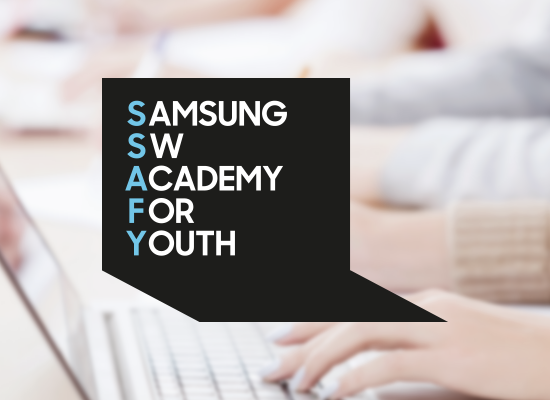

삼성청년 SW아카데미 대한민국 SW의 미래를 이끕니다.
삼성의 SW 교육 경험과 고용노동부의 취업 지원 노하우를 바탕으로, 취업 준비생에게 SW역량 향상 교육 및 다양한 취업 지원 서비스를 제공하여 취업에 성공하도록 돕는 프로그램입니다
본 교육과정은 삼성이 주관하고 고용노동부가 후원하며, 아이들과 미래재단이 함께합니다. (교육 운영은 멀티캠퍼스에서 위탁 실시)